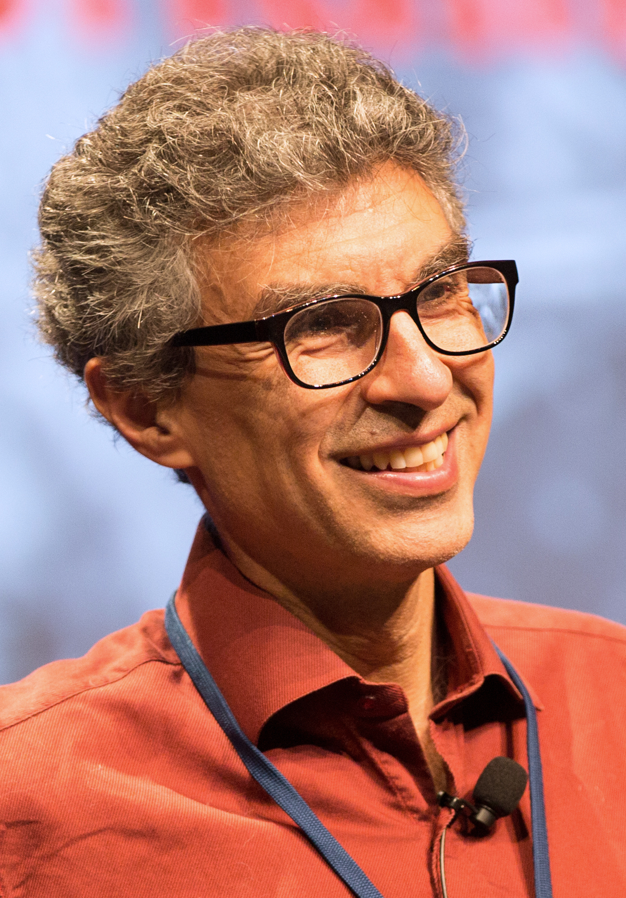
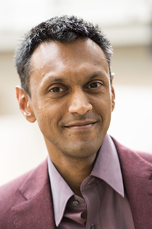
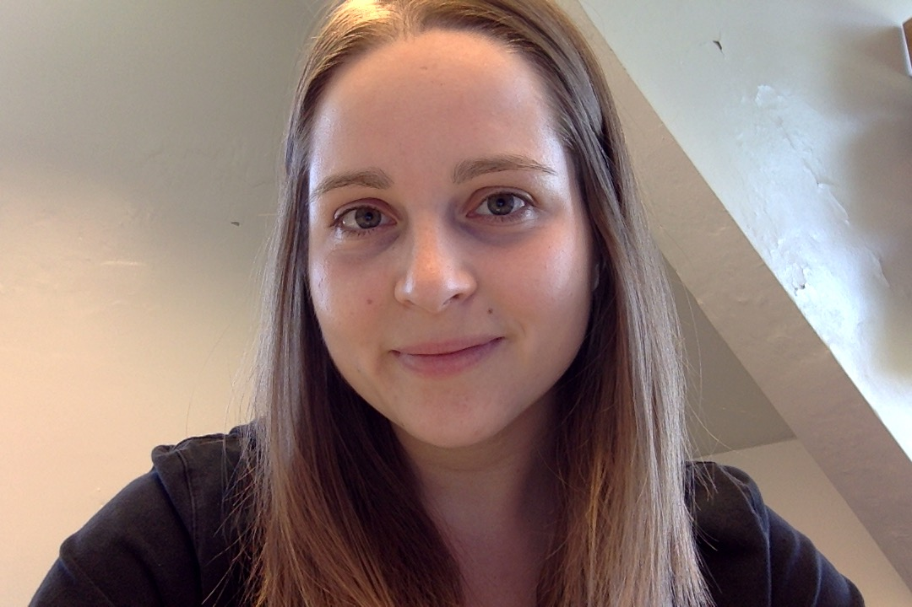
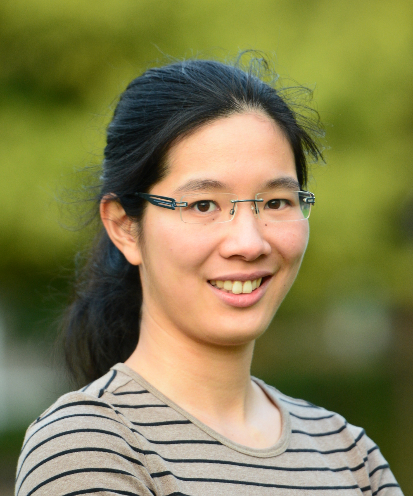
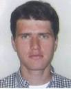
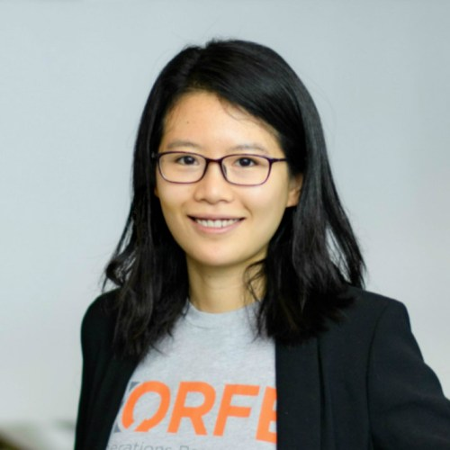
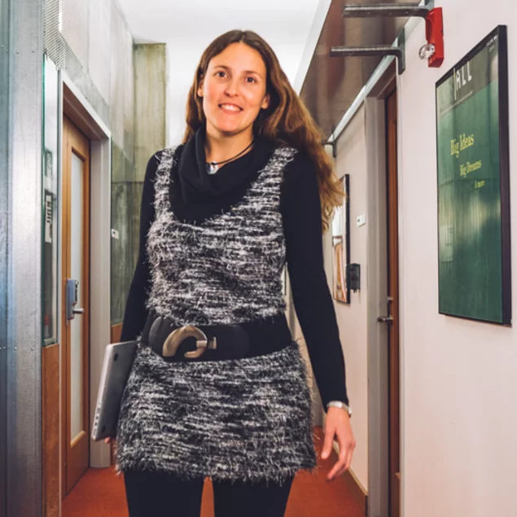

|  | Yoshua Bengio is a professor in the Department of Computer Science and Operational Research at the Université de Montréal. He is also Scientific Director of Mila, Scientific director of IVADO and Canada Research Chair in Statistical Learning Algorithms. In 2019, he receives the ACM A.M. Turing Prize, considered the “Nobel Prize of Computer Science” along with Geoffrey Hinton and Yann LeCun for their advances in conceptual foundations and engineering that have made deep neural networks an essential component of computer science. His main research ambition is to understand principles of learning that yield intelligence. supervises a large group of graduate students and post-docs. |
| David Silver leads the reinforcement learning research group at DeepMind and was lead researcher on AlphaGo, AlphaZero and co-lead on AlphaStar. | |
|  | Sham Kakade is a Washington Research Foundation Data Science Chair, with a joint appointment in the Department of Computer Science and the Department of Statistics at the University of Washington, and a co-director for the Algorithmic Foundations of Data Science Institute. He works on the mathematical foundations of machine learning. Sham's thesis helped in laying the foundations of the PAC-MDP framework for reinforcement learning. With his collaborators, his additional contributions include: one of the first provably efficient policy search methods, Conservative Policy Iteration, for reinforcement learning; developing the mathematical foundations for the widely used linear bandit models and the Gaussian process bandit models; the tensor and spectral methodologies for provable estimation of latent variable models (applicable to mixture of Gaussians, HMMs, and LDA); the first sharp analysis of the perturbed gradient descent algorithm, along with the design and analysis of numerous other convex and non-convex algorithms. He is the recipient of the IBM Goldberg best paper award (in 2007) for contributions to fast nearest neighbor search and the best paper, INFORMS Revenue Management and Pricing Section Prize (2014). He has been program chair for COLT 2011. |
|  | Martha White is an Assistant Professor in the Department of Computing Sciences at the University of Alberta, Faculty of Science. Her research focus is on developing algorithms for agents continually learning on streams of data, with an emphasis on representation learning and reinforcement learning. |
|  | Fanny Yang is an Assistant Professor in the Computer Science Department (D-INFK) at ETH Zurich. Previously she was a postdoctoral Scholar at Stanford University working with John Duchi and Percy Liang and a Junior Fellow at the Institute for Theoretical Studies at ETH Zurich working with Nicolai Meinshausen. |
|  | Nicolas Heess is a Research Scientist at DeepMind, London. He is interested in questions related to artificial intelligence and machine learning, perception, motor control, and robotics. Prior to joining DeepMind Nicolas was a postdoctoral researcher at the Gatsby Unit (UCL) working with Yee Whye Teh and David Silver. |
|  | Mengdi Wang is an associate professor at the Department of Electrical Engineering and Center for Statistics and Machine Learning at Princeton University. She is also affiliated with the Department of Operations Research and Financial Engineering and Department of Computer Science. Her research focuses on data-driven stochastic optimization and applications in machine and reinforcement learning. She received her PhD in Electrical Engineering and Computer Science from Massachusetts Institute of Technology in 2013. At MIT, Mengdi was affiliated with the Laboratory for Information and Decision Systems and was advised by Dimitri P. Bertsekas. Mengdi became an assistant professor at Princeton in 2014. She received the Young Researcher Prize in Continuous Optimization of the Mathematical Optimization Society in 2016 (awarded once every three years), the Princeton SEAS Innovation Award in 2016, the NSF Career Award in 2017, the Google Faculty Award in 2017, and the MIT Tech Review 35-Under-35 Innovation Award (China region) in 2018. She is currently serving as an associate editor for Operations Research. |
|  | Caroline Uhler is a Swiss statistician specializing in algebraic statistics and its applications in genomics. She is Henry and Grace Doherty Associate Professor in the Department of Electrical Engineering and Computer Science and Institute for Data, Systems and Society at the Massachusetts Institute of Technology. |